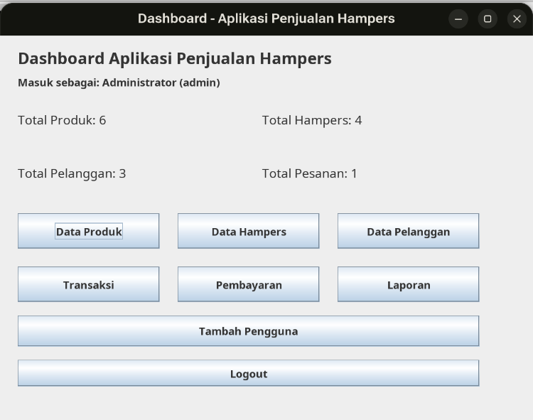

- Stok dan pesanan dicatat terpisah
- Status bayar sulit dipantau
- Riwayat kirim tercecer
- Laporan harus direkap ulang
Sistem Informasi Penjualan
Aplikasi Penjualan Hampers
Satu aplikasi desktop untuk mengelola pesanan, pembayaran, stok, pengiriman, dan laporan secara terpadu.
TI
Presentasi ProyekJava Swing · MySQL · JDBC
Semua proses.Satu kendali.
Pesanan
Pembayaran
Pengiriman
01 · Latar belakang
Dari proses yang terpencar,
Dari proses yang terpencar,
menjadi satu alur kerja.
Bisnis hampers melibatkan banyak aktivitas yang saling bergantung. Pencatatan manual membuat data lambat, berulang, dan rawan tidak konsisten.
Terintegrasi dari hulu ke hilir
Satu aplikasi, satu database, dan pencatatan otomatis di setiap tahap penting.
InputProsesLaporan
02 · Tujuan
Tiga dampak utama
Mengubah data operasional menjadi proses yang lebih cepat, aman, dan mudah diawasi.
Kendali operasional
Produk, hampers, pelanggan, stok, dan pengiriman dikelola dari satu tempat.
Akurasi transaksi
Subtotal, total, status bayar, dan pengurangan stok dihitung secara konsisten.
Informasi siap pakai
Dashboard dan laporan menyajikan ringkasan untuk mendukung keputusan.
“Bukan sekadar menyimpan data—sistem menjaga setiap proses tetap terhubung.”
03 · Kapabilitas
Satu ekosistem, sembilan fitur.
Klik kartu untuk melihat perannya.
Dashboard
Ringkasan jumlah produk, hampers, pelanggan, dan pesanan dalam satu pandangan.
04 · Hak akses
Akses luas untuk operasi.
Akses luas untuk operasi.
Kontrol khusus untuk akun.
Dua role menjaga pekerjaan tetap praktis tanpa mengorbankan batas kewenangan.
A
AdministratorAkses penuh
Dashboard & data master
Transaksi, bayar & laporan
Keuangan, stok & pengiriman
Tambah pengguna
Logout
Admin dapat menambah akun kasir maupun admin baru.
05 · Teknologi
Fondasi yang stabil,
Fondasi yang stabil,
arsitektur yang jelas.
Seluruh aplikasi berjalan sebagai desktop client dan terhubung langsung ke database melalui JDBC. Klik tiap lapisan untuk menyorot perannya.
DesktopRelasionalOffline-first
J
BahasaJava 22Logika aplikasi
UI
AntarmukaJava SwingDesktop interface
↔
Akses dataJDBCConnector/J
DatabaseMySQLMariaDB compatible
06 · Arsitektur
Aliran data aplikasi
Tiga lapis tanggung jawab memisahkan interaksi, aturan proses, dan penyimpanan.
01
Presentation layerForm Java Swing
Input pengguna, validasi form, tabel, dan navigasi.
eventresult
02
Application logicService & JDBC
Aturan bisnis, perhitungan, transaksi, dan pencatatan otomatis.
SQLdata
03
Data layerMySQL / MariaDB
11 tabel relasional, foreign key, dan jejak audit.
Penyimpanan pesanan dan pengurangan stok dijalankan dalam satu transaksi database.
07 · Alur operasional
Satu pesanan, satu jejak utuh.
Klik setiap tahap untuk menyorot alurnya.
01
Data produk, paket hampers, dan pelanggan disiapkan sebagai referensi transaksi.
08 · Otomatisasi
Sekali input,
Sekali input,
beberapa proses bergerak.
Otomatisasi mengurangi input ganda sekaligus menjaga data lintas modul tetap sinkron.
3×pencatatan turunan
berjalan otomatis
berjalan otomatis
01Stok berkurangMutasi penjualan tercatat
02Kas bertambahPembayaran masuk ke keuangan
03Audit tersimpanSumber & referensi dipertahankan
09 · Database
Pesanan menjadi pusat relasi.
Struktur relasional menjaga setiap transaksi tetap dapat ditelusuri. Klik tabel untuk menyorot entitas.
Masterpelangganid_pelanggan · identitas
1 : n
Transaksipesananinvoice · tanggal · total
1 : n
Rincidetail_pesananhampers · qty · subtotal
Bayarpembayaranmetode · nominal · status
Kirimpengirimankurir · resi · status
+ keuangan+ mutasi_barang+ riwayat_pengiriman
11 tabelInnoDB + Foreign KeyCascade terkontrol
10 · Antarmuka
Dirancang untuk alur kerja yang langsung dipahami.
Pilih modul untuk menampilkan antarmuka aplikasi.
01
Ringkasan data dan pintasan ke seluruh modul.
Hampers App

11 · KeamananMelindungi akun.
Melindungi akun.
Menjaga integritas data.
Secure
by design
by design
Password hashing
PBKDF2-HMAC-SHA256
210K iterasi256 bit keyRandom salt
Migrasi otomatis
Password lama di-upgrade menjadi hash setelah login berhasil.
Transaksi atomik
Pesanan dan perubahan stok berhasil atau batal bersama.
Jejak audit
Mutasi, pembayaran, dan riwayat kirim dapat ditelusuri.
12 · Implementasi
Empat langkah menuju aplikasi siap jalan.
Konfigurasi dilakukan sekali. Tandai setiap langkah untuk mengecek kesiapan aplikasi.
Akun awaladmin / admin123
- 01Buka proyek
Gunakan NetBeans dan pastikan Java Platform menunjuk ke JDK 22.
- 02Impor database
Jalankan
db_hampers.sqlpada MySQL atau MariaDB. - 03Atur koneksi
Sesuaikan URL, username, password, serta MySQL Connector/J.
- 04Clean & Run
Build proyek dengan Ant, lalu jalankan
apphampers.Main.
0/4 siap
Kesimpulan
Penjualan lebih rapi.
14
Penjualan lebih rapi.
Operasional lebih terkendali.
Aplikasi Penjualan Hampers menghubungkan seluruh perjalanan pesanan—dari data master hingga laporan akhir.
Terintegrasi Otomatis Terlacak
Terima kasihPertanyaan & diskusi